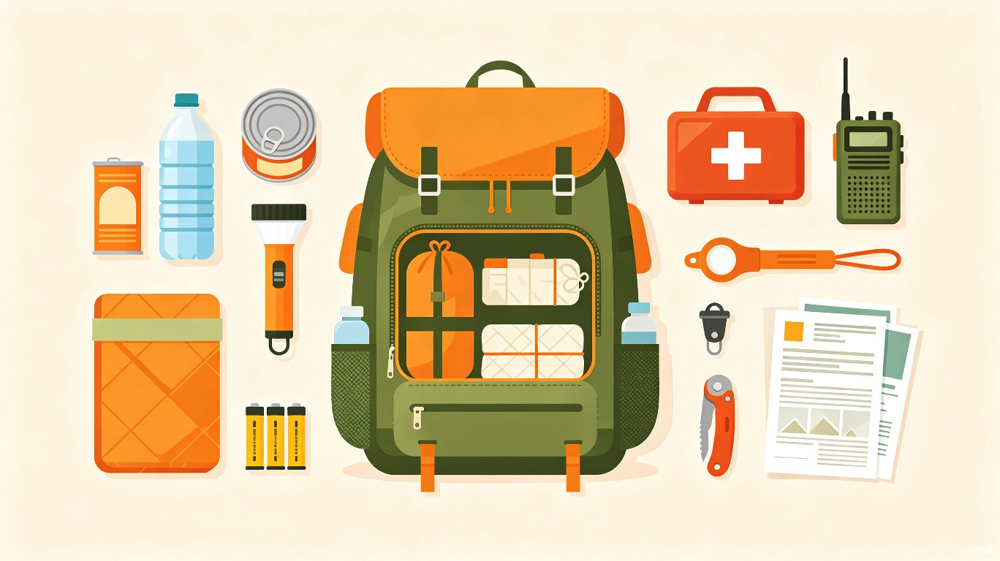

近年极端气象事件频发——暴雨、台风、地震、寒潮、山火，每一次都可能在一夜之间切断电力、水源和燃气供应。大多数人在灾害来临时手足无措，而80%的伤亡可以通过提前准备和正确的应急知识来避免。
灾害发生后72小时是最佳救援窗口期。掌握基本的生存技能可以大幅提高获救概率。
一个成年人每天至少需要3升水（饮用+基本卫生），储备至少72小时用量。
在没有暖气/空调的情况下，了解如何利用衣物、空间和简易工具维持体温至关重要。
中国气象局发布的气象预警信号分为蓝、黄、橙、红四个等级，等级越高代表灾害越严重。了解这些信号的含义，能帮助你做出正确的应对决策。
一般性气象灾害即将发生或可能发生。含义：可能但对日常生活影响较小。建议关注天气变化，做好基本防范。
气象灾害较重，可能造成一定损失。含义：需要警惕，检查应急物资储备，减少不必要的外出。
气象灾害严重，可能造成较大损失。含义：做好应急准备，储备食物和水，确认家人安全位置。
气象灾害特别严重，可能造成重大损失。含义：立即进入应急状态，转移到安全地点，避免一切不必要外出。
iOS/Android系统天气应用自动推送预警通知
weather.com.cn — 最权威的官方预警来源
政府会通过短信群发和社区广播发布紧急通知
"应急管理部"官方App提供实时灾害信息
不同灾害需要的准备工作完全不同。识别你所在地区最常见灾害类型，才能有针对性地做好准备。
强风、暴雨、风暴潮。沿海地区最常见，影响范围广，持续时间长。
瞬间发生，无预警时间。破坏力强，可能引发次生灾害（火灾、滑坡）。
城区内涝、河流泛滥、山洪。城市排水系统超负荷时最危险。
极端低温、暴雪、冰冻。北方常见，南方偶尔发生，后者危害更大。
干旱季节高发，蔓延速度快，烟雾影响范围大。
持续极端高温，对老年人、儿童、慢性病患者威胁最大。

应急包是灾害来临时的生命线。建议每个家庭准备一个72小时应急包，存放在容易拿取的位置，定期检查更新。
| 类别 | 物资 | 建议量 | 优先级 |
|---|---|---|---|
| 💧 水 | 瓶装水 / 净水片 | 每人每天3L × 3天 | 必须 |
| 🍲 食物 | 压缩饼干、罐头、能量棒 | 每人每天2000kcal × 3天 | 必须 |
| 🔥 照明 | 手电筒 + 备用电池 | 至少1个手电 + 2组电池 | 必须 |
| 🏥 保暖 | 应急毯、厚衣物 | 每人1条应急毯 | 重要 |
| 💉 急救 | 急救包（纱布、碘伏、绷带） | 1套基础急救包 | 重要 |
| 📞 通信 | 手摇充电器、哨子 | 各1个 | 重要 |
| 📄 证件 | 身份证/护照复印件、现金 | 全家证件 + 少量现金 | 重要 |
| 🪨 工具 | 多功能刀、胶带、绳索 | 1套 | 建议 |
对家里进行一次"灾害脆弱性扫描"，找出安全隐患并提前整改。以下按风险类别组织排查。
一个提前制定好的家庭应急计划，能让全家人在灾害来临时不被恐慌击垮。以下是一个完整的应急计划模板。
确定至少两个家庭成员汇合点：
室内汇合点：家中最安全的位置（如承重墙内侧走廊）
室外汇合点：小区门口或附近开阔地标（如学校操场、公园）
指定一个外地亲属作为"联络中枢"：
本地通信可能中断，外地的联络人可以作为信息中转站。所有家庭成员向该联系人报告状态，由他统一传达。
规划并实地走一遍：
从家到最近避险场所的至少两条路线（一条被阻断时还有备选）。在手机离线地图中标注。
记录家庭成员的特殊需求：
老人/儿童/孕妇/残障人士的特别照顾需求、慢性病药物清单（药名+剂量+处方照片）、宠物紧急安置方案。
| 项目 | 填写内容 |
|---|---|
| 家庭地址 | ____________________________ |
| 室内汇合点 | ____________________________ |
| 室外汇合点 | ____________________________ |
| 外地联络人 | 姓名:____ 电话:____ |
| 最近避险场所 | ____________________________ |
| 燃气总阀位置 | ____________________________ |
| 总电闸位置 | ____________________________ |
| 应急包位置 | ____________________________ |
| 宠物安置方案 | ____________________________ |
建议打印多份，家中显眼位置贴一份，应急包中放一份，车上放一份。
使用以下清单确认你的家庭是否已做好充分准备。点击条目可标记为已完成。
灾害发生时，最重要的是保持冷静、评估现状、优先保障安全。以下是按紧急程度排列的应对步骤。
优先使用手电筒而非蜡烛（火灾隐患）。没有手电筒时，可以用手机闪光灯。白天尽量利用自然光，拉开窗帘。
紧急立即开启手机省电模式。关闭所有非必要App和推送通知。降低屏幕亮度。关闭WiFi和蓝牙（断网时可省电）。每台手机轮流使用。
紧急冬天：将家人集中在一个小房间，用窗帘、毯子封堵门窗缝隙，利用体温互相取暖。夏天：打开所有窗户通风，向身上泼水降温，避免中暑。
重要冰箱断电后食物可保持安全4小时（不要频繁开冰箱门）。如有冰块可将易腐食物放在保温箱中。先食用易腐食物。
重要断电后拔掉所有电器插头，防止来电瞬间的电压冲击。关闭燃气阀门（非电磁阀可手动关）。不要使用燃气灶取暖。
紧急如有充电宝，优先给手机充电。有车的话可以用车载充电器。太阳能充电宝在晴天可提供缓慢充电。手摇发电效率很低，仅用于紧急通话。
建议听到停水通知后，立即用浴缸、水桶、锅碗存水。一个标准浴缸可存约200L水，足够一家人使用数天。先储存饮用水，再储存生活用水。
紧急热水器水箱：断电后仍有存水（关闭电源后从底部放水阀放出）。马桶水箱：可作为最后的冲洗用水（非饮用水）。瓶装水/饮料：优先饮用。
重要如需使用不确定安全的水源：煮沸是最简单有效的方法（沸腾后持续1分钟）。没有加热条件时，可用净水片或家用漂白剂（需严格按比例）。静止沉淀只能去除大颗粒杂质，不能消毒。
紧急用湿毛巾擦拭身体替代洗澡。刷牙时用水杯接水。冲马桶用存下的洗菜/洗手水。食物以简单加热为主，减少清洗用水。
建议用免洗洗手液替代流水洗手。准备垃圾袋用于临时排泄物收集（密封后丢弃）。女性卫生用品需额外储备。
重要绝对不要饮用自来水（停水后恢复供水时管道可能被污染）。不要用自来水刷牙或清洗伤口。等待官方宣布水质安全后再使用。
紧急发现燃气中断时，先检查燃气表前阀门和灶前阀门是否正常。如果闻到燃气味，立即打开窗户通风，不要触碰任何电器开关，撤离后拨打燃气公司电话。
紧急罐头食品可直接食用。压缩饼干/能量棒无需加热。自热食品（自热米饭等）只需冷水即可加热。户外炉具（卡式炉）可在通风处使用。
重要绝对不要使用燃气灶、炭火在室内取暖（一氧化碳中毒风险）。使用应急毯、睡袋、多层衣物保暖。如必须取暖，选择户外安全的取暖方式。
紧急燃气恢复后，不要立即使用。先确认无异味，然后缓慢打开阀门，点燃灶具观察火焰是否正常（蓝色火焰）。如火焰异常（黄色、红色）立即关闭并联系燃气公司。
重要在信号拥堵时，短信比电话更容易发送成功（短信占用带宽极小）。向家人发送简短的位置和状态信息。约定一个紧急联系频率（如每4小时发一次短信）。
紧急如果手机信号断但WiFi可用，通过微信、QQ等互联网应用语音/视频通话。提前与家人约定好应用和联系顺序。
重要收音机是最可靠的灾害信息来源（建议准备手摇/太阳能收音机）。关注微博、微信官方账号获取灾情更新。注意辨别谣言，只相信官方发布的信息。
重要提前写下重要电话号码（家人、物业、燃气公司、急救120、消防119）。断电后无法查手机通讯录，纸质记录是最后保障。
建议台风和暴雨往往同时到来，风、水、电三重威胁叠加。以下是分阶段的应对策略。
用胶带在玻璃窗上贴"米"字形（减少碎裂飞溅）。将阳台花盆、晾衣架等全部收入室内。检查门窗锁扣是否牢固。充满所有电子设备。
紧急远离窗户和玻璃门，待在室内最安全的房间（通常是浴室或没有窗户的走廊）。绝对不要外出查看"风有多大"——大多数台风伤亡来自被风吹起的杂物。
紧急沿海地区注意风暴潮预警。如果住在低洼海岸区域，提前撤离到高处。不要试图"看海浪"或"拍视频"。
紧急如果积水开始进入室内，立即关闭电源总闸（防止触电）。用沙袋、旧毛巾、胶带封堵门缝。将贵重物品转移到高处。
重要绝对不要涉水行走（水中可能有裸露电线、缺失井盖、尖锐物）。如果必须涉水，用木棍探路，水深超过膝盖就不要再走。远离电线杆和变压器。
紧急不要将车停在地下车库或低洼处。如果车辆在水中熄火，立即弃车逃生，不要尝试重新启动。水淹到车门一半时，开门将非常困难。
重要地震几乎没有预警时间。第一时间做出正确反应，是决定生死的分水岭。
伏地：立即蹲下，降低重心。遮挡：钻到坚固的桌子下面，用双臂护住头颈。抓牢：抓住桌腿，随桌子一起移动。没有桌子时，蹲在内墙墙角，用双臂护头。
紧急不要往外跑（楼梯最危险）。不要站在门口（现代建筑门框并不更坚固）。不要使用电梯。地震时最大的危险是坠落物和飞溅的玻璃，不是建筑整体倒塌。
紧急床上：用枕头护住头部，不要起身。户外：远离建筑、电线杆、广告牌，到开阔地带。开车：靠边停车，避开天桥和电线，留在车内。
紧急关闭燃气阀门（如有异味立即处理）。关闭电源总闸。穿好鞋子（防碎玻璃扎脚）。准备应对余震——余震可能持续数天甚至数周。
重要不要大声喊叫（消耗体力和氧气）。用硬物有节奏地敲击管道或墙壁发出求救信号。用衣物捂住口鼻防尘。保存体力，等待救援。
紧急确认地震预警App是否已触发（部分手机内置地震预警功能）。向家人发送短信报告状态。不要占用电话线路（留给需要紧急救援的人）。
重要洪涝是中国最常见、致死人数最多的自然灾害。城市内涝和河流泛滥是两种主要形式。
将贵重物品和重要文件转移到高处（二楼或柜顶）。用防水袋密封重要证件。准备一个"撤离包"（换洗衣物、药品、充电宝、少量现金），放在门口随时可拿。
紧急立即关闭电源总闸——这是防止触电的最关键一步。如果水已没到插座高度，不要触碰任何电器开关。用沙袋或浸湿的毛巾堵住门缝。
紧急如果水位持续上涨或接到撤离通知，立即撤离。不要等"再看看"。撤离时穿鲜艳衣物（便于搜救），带哨子，向高处走。不要进入阁楼或封闭的屋顶空间（可能被水困住无法逃脱）。
紧急洪水会污染自来水源。洪水期间只喝瓶装水或煮沸过的水。不要用洪水洗碗、刷牙或清洗食物。任何接触过洪水的食物都应丢弃。
紧急不要开车穿过积水——15厘米深的流动水就能让人站立不稳，30厘米的水就能让车辆漂浮。如果车辆被困水中，解开安全带，打破车窗（用头枕金属杆或破窗锤），从窗户逃生。
重要洪水退去后，不要立即回家——先确认建筑结构是否安全。清理淤泥时戴手套和口罩（洪水含有大量细菌）。检查墙壁、地板是否有裂缝或变形。拍照记录所有损失用于保险理赔。
重要灾害中医疗资源紧张，掌握基础急救技能可以在等待救援时保住生命。以下是最常见的灾害伤害急救方法。
直接压迫止血法：用干净的布或纱布直接按压伤口，持续按压至少10分钟（不要频繁揭开查看）。抬高受伤部位：高于心脏位置。止血带：仅用于四肢严重大出血，每30分钟松一次。
紧急确认患者无意识、无呼吸后，立即开始CPR：按压位置：两乳头连线中点。按压深度：至少5厘米。频率：每分钟100-120下。比例：30次按压+2次人工呼吸（如不会人工呼吸，只做按压也可以）。
紧急不要移动疑似骨折的部位。用夹板（木板、硬纸板、卷起的杂志）固定骨折处上下两个关节。用绷带或布条绑紧，但不要太紧（保持血液循环）。
重要冲：用流动冷水冲洗烧伤处至少15分钟（不是冰水）。脱：小心脱去烧伤处的衣物（如粘住不要硬撕）。盖：用干净的保鲜膜或纱布覆盖。不要涂牙膏、酱油等偏方。
重要将患者移到阴凉通风处。解开衣领，用湿毛巾敷额头和腋下。给患者喝淡盐水（如果意识清醒）。如果出现意识模糊、皮肤干热无汗（热射病前兆），立即拨打120。
重要将患者移到温暖处，脱掉湿衣服。用毯子、睡袋包裹，核心部位（胸部、腹部、头部）优先保暖。给温热含糖饮料（如果意识清醒）。不要搓揉四肢（可能使冷血回流心脏）。
紧急当灾害严重到需要撤离时，有序撤离 vs 盲目逃离，结果完全不同。以下是一份完整的撤离指南。
接到官方撤离通知（短信/广播/社区通知）→ 立即撤离。自行判断：建筑结构受损、水位持续上涨、闻到燃气味 → 果断撤离。不确定时，宁早勿晚。
关燃气 → 关电源 → 锁门窗 → 带应急包 → 带证件 → 穿好鞋 → 告知家人去向。在门口贴便条（如果家人不在），写明撤离方向和目的地。
走楼梯，不走电梯。避开低洼、桥梁、陡坡。远离电线杆和广告牌。如有烟雾，用湿毛巾捂住口鼻，弯腰低姿前进。带上哨子（每隔一段时间吹响，便于搜救定位）。
向工作人员登记。服从统一安排。保持环境卫生。注意个人财物安全。关注家人位置的更新信息。耐心等待官方发布"可以返回"的通知。
在官方确认安全后再返回。进屋前先检查外部：墙壁裂缝、屋顶塌陷、燃气气味。进屋后立即通风。检查水电燃气是否正常。拍照记录所有损失。
换洗衣物2套、常用药+处方、充电宝+数据线、少量现金、重要证件复印件、哨子、笔和纸、轻便食品、瓶装水、手电筒、雨衣。
提前确认哪些避险场所接受宠物。准备宠物笼/航空箱、牵引绳、宠物食品+水、宠物医疗记录、宠物身份牌。不要将宠物留在家里——它们无法独自生存。
给儿童准备一个"安抚玩具"（减少恐慌）。老人随身携带常用药和病历。如有轮椅，提前确认避险场所是否无障碍。儿童和老人各写一张信息卡放在口袋里。
以下展示灾害发生时应关注的典型信息维度：
确认自己所在区域是否在受灾范围内，关注官方划定的警戒区域。
了解当前灾害的严重程度，判断自身面临的威胁级别。
跟踪电力、供水、燃气、通信的恢复进度。
| 用途 | 号码 | 备注 |
|---|---|---|
| 紧急报警 | 110 | 刑事/治安紧急情况 |
| 火警 | 119 | 火灾、爆炸、化学品泄漏 |
| 急救 | 120 | 需要医疗救护时拨打 |
| 交通事故 | 122 | 交通事故报警 |
| 政务服务 | 12345 | 政策咨询/民生诉求 |
| 电力报修 | 95598 | 国家电网客服热线 |
| 燃气报修 | 各地区不同 | 查看燃气账单上的服务电话 |
| 供水热线 | 各地区不同 | 查看水费账单上的服务电话 |
灾害过后，及时启动保险理赔可以有效减轻经济损失。以下是标准理赔流程。
在确保自身安全的前提下，对房屋受损、财产损失进行全面拍照和录像。注意拍摄整体和细节（如裂缝、积水痕迹、电器损坏）。这些证据是理赔的核心依据。
尽快拨打保险公司客服电话或通过App在线报案。说明灾害类型、发生时间、受损情况。记录报案号和受理人信息。
准备好：保单信息、身份证复印件、损失清单、照片/视频证据、购买凭证（如有）、维修报价单。越详细的材料越有利于快速理赔。
保险公司会安排定损员现场勘查或线上视频定损。保持现场（不要急于清理或维修），配合定损员工作。如有异议，可要求复勘。
确认定损金额后签署理赔协议。赔款通常在5-15个工作日内到账。如遇延迟，可拨打银保监会投诉热线12378。
灾害过后，系统性地补充消耗的物资，为下一次可能的紧急情况做好准备。
恢复供水后不要立即饮用自来水，等待官方水质检测报告。先补充瓶装水储备。
清理过期和受损食品，按清单重新采购应急食物。
检查所有应急设备的状况，更换已使用或过期的物品。
每次灾害经历都是宝贵的学习机会。系统复盘可以帮助你和家人在下次做得更好。